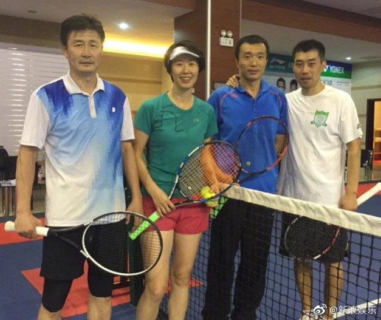

接上条说特朗普在伊朗问题的两难境地。另一种很有可能的情况，就是特朗普没有任何外交政策的整体布局。他之前对伊朗施压可以完全理解为跪舔沙特和以色列。舔沙特是为了扩大军购来兑现对军火商的选举承诺，舔以色列是为了对最终选择支持他的基督教福音派投桃报李。所以他就是为了老板们高兴，老板们让他干什么他就干什么。等把火玩到玩不下去了，他就轻松拍手叫停。他跟老板们也可以交代了：我尽力了。这么说也很说的通。
这次伊朗问题又再次体现出了特朗普外交政策根本的不一致性：一方面他不断主张孤立主义，认为美国不应该充当世界警察，批评奥巴马政府在利比亚的行动，认为只应该在别国付钱雇美国当保镖时候保护他国。另一方面，他在伊朗问题上不断开展鹰派外交，持续打压伊朗。但最终把局势逼到军事冲突一触即发的时候
好多年没听说叶钊颖的新闻了，突然看到新闻竟然是这样。另外为什么是新浪娱乐？@新浪娱乐:#郝海东 叶钊颖# 23日，网曝前中国国脚@郝海东 和前羽毛球世界冠军@叶钊颖 已于5月8日在北京领证结婚，还称因郝海东生日是5月9日，叶钊颖5月7日生日，所以二人特地选在中间这一天领证结婚，目前双方未回应。此前，叶钊颖与郝海东微博互动频繁，为他儿子郝润泽庆生时已直呼大儿子。网页链接 